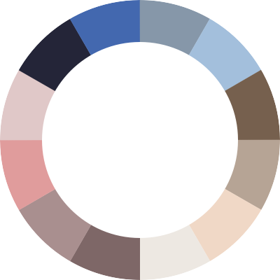

자료현황

| 분류 | 개수 | 비율 (%) |
|---|---|---|
| 보고서 | 2,054 | 5.54 |
| 논문 | 2,054 | 5.54 |
| 단행본 | 2,054 | 5.54 |
| 정기간행물 | 2,054 | 5.54 |
| 세미나 | 2,054 | 5.54 |
| 고문헌 | 2,054 | 5.54 |
| 지도 | 2,054 | 5.54 |
| 사진 | 2,054 | 5.54 |
| 동영상 | 2,054 | 5.54 |
| 구술 (음성) | 2,054 | 5.54 |
| 신문기사 | 2,054 | 5.54 |
| 기타 | 2,054 | 5.54 |
장르
유형